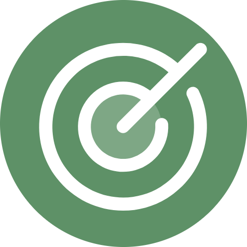

Every worker tab is added to the coloured CALLUM AUTOMATION group.

Callum Scout
Dedicated automation window
Protected window
CALLUM AUTOMATION
This window is reserved for today’s work.
Callum Scout will only control protected LinkedIn tabs inside this purple group. Your LinkedIn tabs in other Chrome windows are left alone.
Current status
Preparing
The protected window is getting ready.
Run progress
0 / 0
An action is blocked if its tab is moved to another Chrome window.
The active automation page has a purple border and protected-tab label.